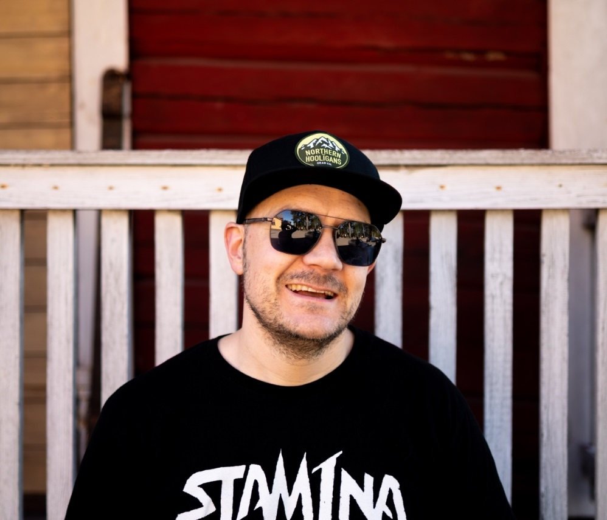

Petri
Kumpumäki
Software Developer (in progress)
INFO
Petri Kumpumäki Jyväskylästä. Alanvaihtaja sähköautomaatio ja mekaniikka kunnossapidosta. valmistunut tieto- ja viestintätekniikan, ohjelmistokehittäjän perustutkinnosta työnohella keväällä 2024. Syksy 2024 aloitin JAMK tieto- ja viestintätekniikan insinööritutkinnon.
TYÖHISTORIA
Harjoittelu 8.1- 28.3.2024
Työharjoittelu kolmen kuukauden ajan Technosmart Oy:lla ohjelmistokehittäjänä. Tein Python kielellä ohjelmiin päivityksiä ja käsittelin sulautettujen järjestelmien ratkaisuja. GitHub ja Azure tullut täältä osaksi tutuksi. Lisäksi Linux serveriin tuli tutustuttua.
Työelämä jakso Valio Oy
2015 ->
Kunnossapitoasentaja Jyväskylän Valio automaatiovarasto. Työnkuvaani kuuluu Sähköautomaatio, mekaaniset asennukset ja korjaukset. Vuosihuollot ja erilaiset projektityöt kuten laitevalmistajien asennukset. Sekä ICT puolelta vaihtelevaa tekemistä.
- Osaamista automaatio väyläratkaisuista.
- Sähkömoottorit
- Taajuusmuutajat
- As-i väylä ja siihen liitettävät kojeet
2008-2014
Valvomotyöntekijänä, missä toimeen kuvaani kuului automaatiovaraston käynnin valvonta ja materiaali virran kulun seuranta sekä huollot ja korjaukset.
PORTFOLIO
#
Python
Olen käyttänyt Pythonia useissa kouluprojekteissa ja työharjoittelussa. Pythonin monipuolisuus ja helppokäyttöisyys ovat tehneet siitä tällä hetkellä suosikkikieleni erityisesti datan käsittelyssä ja analysoinnissa sekä sen selkeydessä.
C#
C# on ollut pääasiallinen ohjelmointikieleni Vamian tutkinnon aikana, jossa käytin sitä intensiivisesti kahden vuoden ajan tekemällä erillaisia projekteja. Tämä antoi minulle vahvan pohjan sovelluskehityksessä.
MySQL
Olen suorittanut MySQL-tietokantoihin liittyviä kursseja sekä Vamiassa että JAMKissa. Näiden kurssien kautta olen oppinut suunnittelemaan ja hallinnoimaan tietokantoja tehokkaasti.
HTML ja CSS
HTML ja CSS ovat tulleet minulle tutuksi erityisesti JAMKin kursseilla. Olen kehittänyt taitojani verkkosivujen suunnittelussa ja toteutuksessa, ja pystyn luomaan responsiivisia ja käyttäjäystävällisiä sivustoja. Kuten tämä oma verkkoportfolio sivuni.
Linux
Linux-palvelinta olen käyttänyt JAMKin kurssilla sekä Vamian harjoittelujaksossa. Minulla on Linux käyttöliittymä ja Linux server Oracle virtualboxissa virtuaali ympäristönä. Olen oppinut käyttämään Linuxia tehokkaasti kehitysympäristönä ja hallitsemaan palvelimia.
GitHub
GitHub on ollut keskeinen työkalu projekteissani, ja olen käyttänyt sitä versionhallintaan sekä yhteistyöhön muiden kehittäjien kanssa. Olen luonut ja hallinnoinut useita projekteja GitHubissa, mikä on parantanut tiimityöskentelytaitojani.
JavaScript
Olen vähän oppinut JavaScriptiä Vamian tutkinnossa web kehityksen kautta ja nyt alkaa keväällä 2025 kurssi JAMKissa ja pääsen syventämään osaamistani.